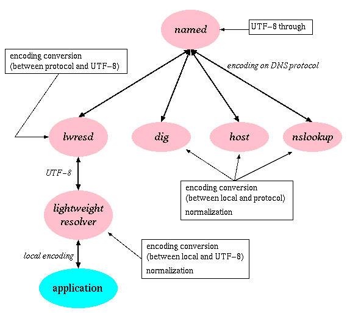

mDNkit に含まれる BIND-9 用のパッチファイルを適用することにより、 BIND-9 において従来の ASCII 文字によるドメイン名に加え、 非 ASCII 文字による多言語ドメイン名を扱うことが可能になります。
具体的には、このパッチは BIND-9 に次のような機能を追加します。
BIND-9 へのパッチの適用方法は、パッチファイルの先頭に記載してあります。 なおパッチファイルについては、 対応する BIND のバージョンをよく確認してから、使用してください。
BIND-9 はそれまでの BIND-8 とはリゾルバの構成が全く異なっています。 BIND-8 まではリゾルバはアプリケーションにリンクされるライブラリとして 実装されていましたが、 BIND-9 ではリゾルバの機能の大部分が lwresd (lightweight resolver daemon) というサーバに移され、 アプリケーションにリンクされるのはlightweight resolver と呼ばれる lwresd との通信を行うためのライブラリとなっています。
本パッチはこのアーキテクチャに合わせ、多言語ドメイン名の各処理を それぞれのコンポーネントに分散させました。以下に各コンポーネントで 実装される機能とコンポーネント間のインタフェースで用いるエンコーディングを 表した図を示します。

named における修正は次の一点のみです。
BIND-9 の named ではドメイン名の処理はほとんど8ビットスルーになっており、 UTF-8 等の MSB のセットされたバイトもそのまま透過します。 しかし named 内で処理に使用されているドメイン名の内部表現 (dns_name_t) からテキスト表現への変換部分は8ビットスルーになっておらず、ASCII 文字以外 はバックスラッシュでクォートされ、\DDD という形式の表現に 変換されてしまいます。 DNS プロトコル上で用いられるエンコーディングが RACE などの ASCII 互換 エンコーディングであれば ASCII 以外の文字がドメイン名に現れることはないので 問題ないのですが、UTF-8 を使用する場合には問題となります。
BIND-9 パッチは、この処理を修正し、変換しようとする文字がUTF-8 文字の 場合にはバックスラッシュによるクォートをしないようにします。 この動作は named の設定ファイル (named.conf) で切り替え可能であり、 設定ファイルの options セクションの allow-utf8 パラメータで 指定します。DNS プロトコル上で用いるエンコーディングとして UTF-8 を 使用する際には次のように記述してください。
options {
...
allow-utf8 yes;
...
};
lwresd に対しては次のような修正を加えてあります。
これは named に対する修正と同じで、ドメイン名を内部表現から テキスト表現に変換する際のバックスラッシュによるクォーティングを 行わないようにするものです。
named の場合、これは設定ファイル named.conf のオプションで 切り替えられるようになっていますが、lwresd の場合には自動切り替えに なっています。lwresd が読み込む クライアント設定ファイルの サーバエンコーディングエントリに設定されているコードセット名を参照し、 それが ASCII 互換エンコーディングでない場合にはバックスラッシュによる クォートをしないようにします。
lwresd は多言語ドメイン名のエンコーディングとして、クライアント つまり lightweight resolver ライブラリとの間の通信には UTF-8 を、 また named との通信には DNS プロトコル上のエンコーディングをそれぞれ 使用します。したがって両者の間のエンコーディング変換を行います。
エンコーディング変換には MDN ライブラリの res モジュール を使用しています。 DNS プロトコル上のエンコーディングの指定は クライアント設定ファイルで行います。
クライアント側のライブラリは、
名前解決用の API 関数はローカルエンコーディングで表された 多言語ドメイン名が扱えるように修正されています。 また内部実装は、将来 UTF-8 エンコーディングのドメイン名を扱える API の追加が容易にできるように設計されています。これらについて この後説明します。
パッチによって多言語化される API 関数の一覧です。
多言語化された API 関数は、従来の ASCII ドメイン名に加え、 非 ASCII ドメイン名を扱うことができます。非 ASCII ドメイン名として、 クライアント設定ファイルの内容に応じて、 新たに以下のようなドメイン名を取り扱うことができるようになります。
引数の型や返り値の型に変更はありません。 パッチを当てる前と同様の呼び出し方法で、従来の ASCII ドメイン名と、 非 ASCII ドメイン名の両方を扱うことができます。 非 ASCII ドメイン名については、 ローカルエンコーディングのドメイン名を引数として受け取ることができます。
これまで上記の API 関数で行なわれていた処理は、 以降で説明するそれぞれの内部関数に移行し、API 関数は、ドメイン名のエンコーディング情報をこの内部関数に渡す役割をしています。
多言語化された API 関数に関連して、以下の内部関数が追加されました。
追加された内部関数についての仕様は、以下の通りです。
int lwres_getaddrinfo_enc(const char *, const char *, const struct addrinfo *, struct addrinfo **, int)
lwres ライブラリの関数 lwres_getaddrinfo() に、 ローカルエンコーディングか否かの判定フラグのエントリを追加したものです。 lwres_getaddrinfo() との違いは、static 関数である set_order() 関数にエンコードタイプの判定フラグを渡している点のみです。
関数の最後の引数がエンコードタイプの判定フラグで、 ローカルエンコーディングのときにはLWRES_ENCODING_LOCAL、 UTF-8 エンコーディングのときにはLWRES_ENCODING_UCSが指定可能です。 lwres_getaddrinfo() 関数から lwres_getaddrinfo_enc() 関数を呼び出すときは、 エンコードタイプの判定フラグにLWRES_ENCODING_LOCALを指定しています。
返される値は EAI_NONAME、EAI_BADFLAGS、EAI_SYSTEM、 EAI_FAMILY、EAI_SOCKTYPE、EAI_SERVICE、 EAI_MEMORY、0 のいずれかです。
int lwres_getnameinfo_enc(const struct sockaddr *, size_t, char *, size_t, char *, size_t, int, int)
lwres ライブラリの関数 lwres_getnameinfo() に、 ローカルエンコーディングか否かの判定フラグのエントリを追加したものです。 lwres_getnameinfo() との違いは、lwres_getnamebyaddr() 関数の呼び出し部を lwres_getnamebyaddr_enc() 関数に変更している点のみです。
関数の最後の引数がエンコードタイプの判定フラグで、 ローカルエンコーディングのときにはLWRES_ENCODING_LOCAL、 UTF-8 エンコーディングのときにはLWRES_ENCODING_UCSが指定可能です。 lwres_getnameinfo() 関数から lwres_getnameinfo_enc() 関数を呼び出すときは、 エンコードタイプの判定フラグにLWRES_ENCODING_LOCALを指定しています。
返される値は ENI_NOSOCKET、ENI_SALEN、ENI_FAMILY、 ENI_MEMORY、ENI_SYSTEM、ENI_NOHOSTNAME、 SUCCESS のいずれかです。
struct hostent * lwres_gethostbyname_enc(const char *, int)
lwres ライブラリの関数 lwres_gethostbyname() に、 ローカルエンコーディングか否かの判定フラグのエントリを追加したものです。 lwres_gethostbyname() との違いは、lwres_getipnodebyname() 関数の呼び出し部を lwres_getipnodebyname_enc() 関数に変更している点のみです。
関数の最後の引数がエンコードタイプの判定フラグで、 ローカルエンコーディングのときにはLWRES_ENCODING_LOCAL、 UTF-8 エンコーディングのときにはLWRES_ENCODING_UCSが指定可能です。 lwres_gethostbyname() 関数から lwres_gethostbyname_enc() 関数を呼び出すときは、 エンコードタイプの判定フラグにLWRES_ENCODING_LOCALを指定しています。
lwres_getipnodebyname_enc() から返って来た hostent 構造体へのポインタを返します。
struct hostent * lwres_gethostbyname2_enc(const char *, int, int)
lwres ライブラリの関数 lwres_gethostbyname2() に、 ローカルエンコーディングか否かの判定フラグのエントリを追加したものです。 lwres_gethostbyname2() との違いは、lwres_getipnodebyname() 関数の呼び出し部を lwres_getipnodebyname_enc() 関数に変更している点のみです。
関数の最後の引数がエンコードタイプの判定フラグで、 ローカルエンコーディングのときにはLWRES_ENCODING_LOCAL、 UTF-8 エンコーディングのときにはLWRES_ENCODING_UCSが指定可能です。 lwres_gethostbyname2() 関数から lwres_gethostbyname2_enc() 関数を呼び出すときは、 エンコードタイプの判定フラグにLWRES_ENCODING_LOCALを指定しています。
lwres_getipnodebyname_enc() から返って来た hostent 構造体へのポインタを返します。
struct hostent * lwres_gethostbyname_r_enc(const char *, struct hostent *, char *, int, int *, int)
lwres ライブラリの関数 lwres_gethostbyname_r() に、 ローカルエンコーディングか否かの判定フラグのエントリを追加したものです。 lwres_gethostbyname_r() との違いは、lwres_getipnodebyname() 関数の呼び出し部を lwres_getipnodebyname_enc() 関数に変更している点のみです。
関数の最後の引数がエンコードタイプの判定フラグで、 ローカルエンコーディングのときにはLWRES_ENCODING_LOCAL、 UTF-8 エンコーディングのときにはLWRES_ENCODING_UCSが指定可能です。 lwres_gethostbyname_r() 関数から lwres_gethostbyname_r_enc() 関数を呼び出すときは、 エンコードタイプの判定フラグにLWRES_ENCODING_LOCALを指定しています。
エラーのときは NULL、正常のときは値が格納された hostent 構造体へのポインタを返します。
struct hostent * lwres_gethostbyaddr_enc(const char *, int, int, int)
lwres ライブラリの関数 lwres_gethostbyaddr() に、 ローカルエンコーディングか否かの判定フラグのエントリを追加したものです。 lwres_gethostbyaddr() との違いは、lwres_getipnodebyaddr() 関数の呼び出し部を lwres_getipnodebyaddr_enc() 関数に変更している点のみです。
関数の最後の引数がエンコードタイプの判定フラグで、 ローカルエンコーディングのときにはLWRES_ENCODING_LOCAL、 UTF-8 エンコーディングのときにはLWRES_ENCODING_UCSが指定可能です。 lwres_gethostbyaddr() 関数から lwres_gethostbyaddr_enc() 関数を呼び出すときは、 エンコードタイプの判定フラグにLWRES_ENCODING_LOCALを指定しています。
lwres_getipnodebyaddr_enc() から返って来た hostent 構造体へのポインタを返します。
struct hostent * lwres_gethostbyaddr_r_enc(const char *, int, int, struct hostent *, char *, int, int *, int)
lwres ライブラリの関数 lwres_gethostbyaddr_r() に、 ローカルエンコーディングか否かの判定フラグのエントリを追加したものです。 lwres_gethostbyaddr_r() との違いは、lwres_getipnodebyaddr() 関数の呼び出し部を lwres_getipnodebyaddr_enc() 関数に変更している点のみです。
関数の最後の引数がエンコードタイプの判定フラグで、 ローカルエンコーディングのときにはLWRES_ENCODING_LOCAL、 UTF-8 エンコーディングのときにはLWRES_ENCODING_UCSが指定可能です。 lwres_gethostbyaddr_r() 関数から lwres_gethostbyaddr_r_enc() 関数を呼び出すときは、 エンコードタイプの判定フラグにLWRES_ENCODING_LOCALを指定しています。
エラーのときは NULL、正常のときは値が格納された hostent 構造体へのポインタを返します。
struct hostent * lwres_getipnodebyname_enc(const char *, int, int, int *, int)
lwres ライブラリの関数 lwres_getipnodebyname() に、 ローカルエンコーディングか否かの判定フラグのエントリを追加したものです。 lwres_getipnodebyname() との違いは、lwres_getaddrsbyname() 関数の呼び出し部を lwres_getaddrsbyname_enc() 関数に変更している点のみです。
関数の最後の引数がエンコードタイプの判定フラグで、 ローカルエンコーディングのときにはLWRES_ENCODING_LOCAL、 UTF-8 エンコーディングのときにはLWRES_ENCODING_UCSが指定可能です。 lwres_getipnodebyname() 関数から lwres_getipnodebyname_enc() 関数を呼び出すときは、 エンコードタイプの判定フラグにLWRES_ENCODING_LOCALを指定しています。
エラーのときは NULL、正常のときは値が格納された hostent 構造体へのポインタを返します。
struct hostent * lwres_getipnodebyaddr_enc(const void *, size_t, int, int *, int)
lwres ライブラリの関数 lwres_getipnodebyaddr() に、 ローカルエンコーディングか否かの判定フラグのエントリを追加したものです。 lwres_getipnodebyaddr() との違いは、lwres_getnamebyaddr() 関数の呼び出し部を lwres_getnamebyaddr_enc() 関数に変更している点のみです。
関数の最後の引数がエンコードタイプの判定フラグで、 ローカルエンコーディングのときにはLWRES_ENCODING_LOCAL、 UTF-8 エンコーディングのときにはLWRES_ENCODING_UCSが指定可能です。 lwres_getipnodebyaddr() 関数から lwres_getipnodebyaddr_enc() 関数を呼び出すときは、 エンコードタイプの判定フラグにLWRES_ENCODING_LOCALを指定しています。
エラーのときは NULL、正常のときは値が格納された hostent 構造体へのポインタを返します。
BIND-9 には DNS の問い合わせツールとして dig、host、nslookup という コマンドが付属します。mDNkit の BIND-9 パッチにより、これらはいずれも 多言語ドメイン名が扱えるようになります。具体的には以下の機能が 付加されます。
また DNS の返答に含まれる多言語ドメイン名をローカルエンコーディングに 変換し、表示します。